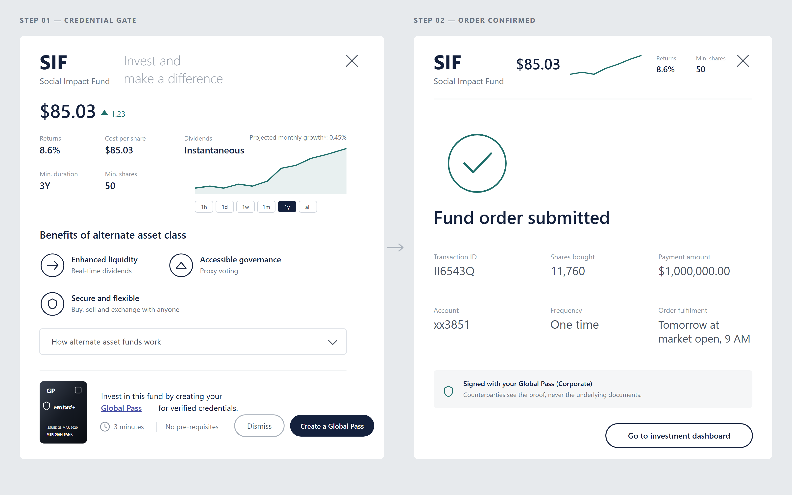
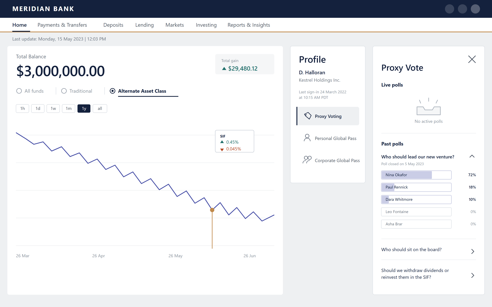
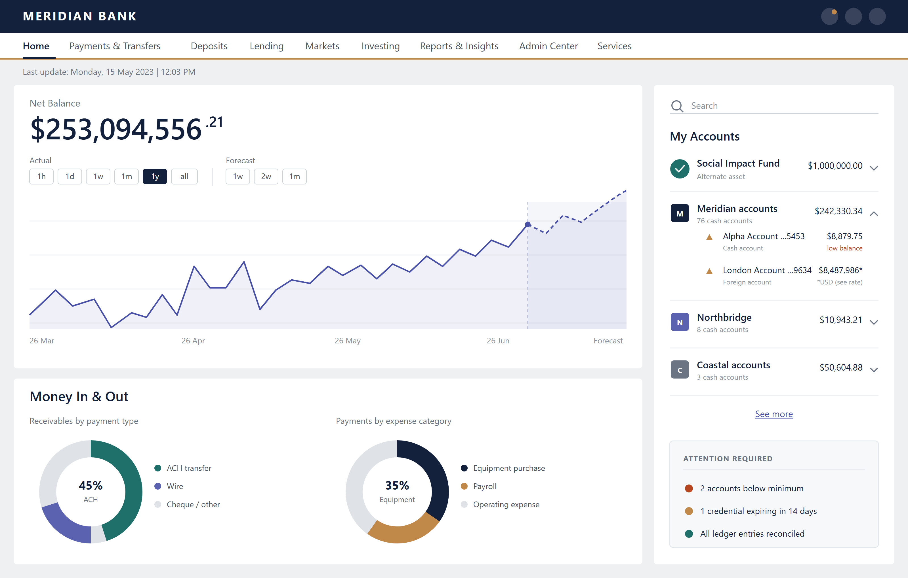
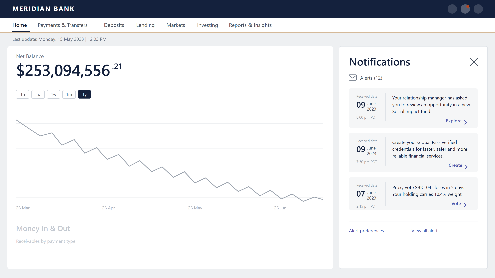
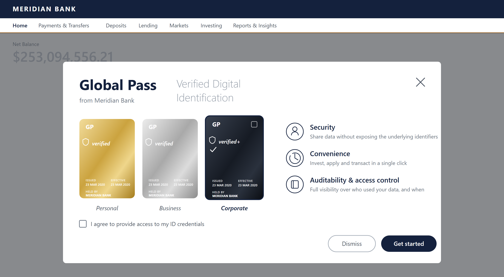
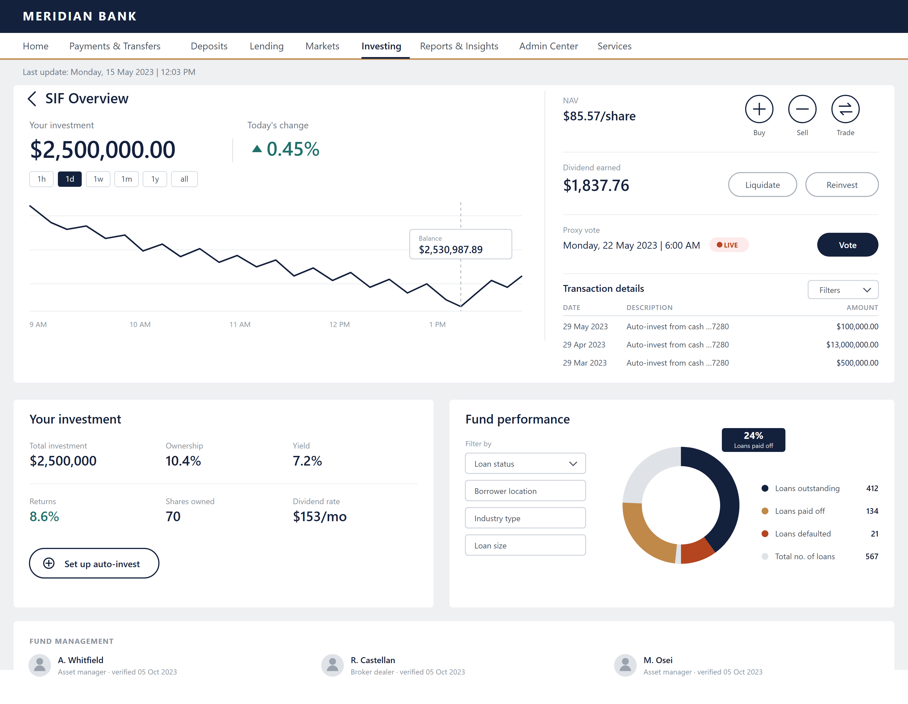

Bridging the Financing Gap for Diverse-Owned Small Businesses
Fair and equitable capital access through distributed ledger technology.
Senior Product Designer · 4 Months + 3 Months Pilot Discovery · Pilot · Solo, working from a dedicated research team's findings
Client anonymised under NDA.
Problem
Diverse entrepreneurs face measurable capital access disparities — 86% of Black-owned firms report unmet funding needs, and diverse owners pay roughly 7.8% higher interest rates, based on direct interviews conducted by the research team. Existing decentralised finance products were too complex for borrowers and too unproven for institutional investors.
Solution
A decentralised capital bridge built on distributed ledger technology (DLT), with the technical complexity hidden behind a single verifiable identity credential — the Global Pass.
Impact
Projected: loan approval time under 48 hours (down from 21 days), a 50% rise in application completions, and a 90% drop in loan routing errors — based on usability testing with real users on working prototypes, not yet measured in production.
The Challenge
Small-business lending is slow and manual: dozens of paper documents, risk scored by hand, weeks of coordination between banks. For diverse-owned businesses already facing worse terms, that process is one more barrier — and it falls hardest on the applicants who most need the money quickly.
The brief: build something simple enough for a small-business owner and credible enough for an institutional investor. Those two want opposite things from an interface — one wants fewer decisions, the other wants to see everything. That tension is the whole project.
Unmet funding for black-owned firms
Higher interest rates for diverse owners
My Role
I led the design of the liquidity bridge — architecting the Global Pass identity system, the tiered access model, and the governance dashboard — working from findings gathered by a dedicated research team rather than running the interviews myself.
Research & Empathy
Understanding the Core Users
Our research team interviewed stakeholders across the full lending chain: Larissa (healthcare DOSB owner), Phil (loan origination manager), Anna (loan servicing specialist), Amy (asset manager), and William (institutional investor). I worked from their synthesis to shape the architecture below.
The Core Technology: Distributed Ledger Technology (DLT)
As defined in our strategic baseline, DLT is the underlying technology that blockchains are built on. It lets users see any change to the data and who made it, cuts down on the need for a separate audit, keeps the data reliable, and restricts access to only those who need it. Here is how I mapped those specific DLT capabilities to what each type of user actually needed:
The DOSB Owner
Larissa
Only provides access to those that need it.
"I need a secure platform where I can safely share my sensitive business identity and financial credentials to get funding, knowing my data is strictly controlled."
The Institutional Investor
William & Amy
Reduces the need to audit data and ensures data is reliable.
"I need a transparent, tamper-proof system where I can confidently invest capital without spending excessive time and money auditing the underlying business data."
The Loan Servicer & Originator
Anna & Phil
The infrastructure allows users to view any changes and exactly who made them.
"I need an immutable, traceable ledger to efficiently track loan terms, repayments, and stakeholder approvals without ever disputing the history of the transaction."
The Compliance & Security Officer
System Governance
Reduces the need to audit data and provides highly restricted access.
"I need the checks built into the system itself, so trust is not something a person has to establish by hand every time."
The through-line: four groups, four different reasons to distrust the current process. Every one of them was solving for trust — just from a different side of the transaction.
01. Technical Architecture
Understanding the Ecosystem
The flow of capital in a decentralised environment requires absolute transparency between participants, so I mapped the architecture to make each stakeholder's position in the bridge explicit. Designing the system around a digital ledger automated credit verification and is projected to bring approval times from 21 days to under 48 hours, based on usability testing with real users on prototypes.
Two Rules I Designed Against
Everything stays traceable
Every transaction has to trace back to where it came from. Institutions will not put money into something they cannot audit.
Nothing waits on a person
The loan-servicing steps that used to sit in someone's inbox waiting for a manual approval run on automated triggers instead.
02. User Experience
Designing for Trust
The question I kept coming back to: how do you make a blockchain credential feel as ordinary as a card from a bank you've used for years? Anything that looked like a crypto app signalled the opposite of stability — and both audiences wanted stability far more than they wanted novelty.
The answer was the Global Pass — a single verifiable identity credential, visually anchored in the language of premium banking rather than crypto wallets. Borrowers verify once, then share cryptographically signed proofs instead of resubmitting documents.

Projected result: verifying once rather than per-platform is projected to raise application completions 50%, based on prototype usability testing.
Tiered Identity
I defined four distinct tiers of access: Personal, Business, Verified+, and Corporate. Each tier automatically unlocks its own permissions — enforced by code on the ledger itself rather than manual approval — allowing for progressive disclosure of complex financial tools.
Visual Strategy
Texture and typographic treatment carry the signal of institutional maturity, deliberately away from the crypto aesthetic.
Personal · Business · Verified+ · Corporate — each tier automatically unlocking more permissions.
How the Global Pass is Created
Small Business Owner
Pass
23 Mar 2020
23 Mar 2020
Meridian Bank
Pass
23 Mar 2020
23 Mar 2020
Meridian Bank
Where the Global Pass is Used
Investor
Pass
23 Mar 2020
23 Mar 2020
Meridian Bank
Pass
23 Mar 2020
23 Mar 2020
Meridian Bank
"People trusted the pass because it looked like something a bank would hand you. That was the whole trick, and it was not a technical one."
03. Governance Systems
Asynchronous Collaboration
Institutional money doesn't move without agreement, and agreement takes time nobody has. So I put voting where the money already is — inside the dashboard, next to the holding it affects — instead of in a separate governance tool people would forget to open.
Yield Strategy: SBIC-04
Should the fund increase allocation to Series A diverse-led tech firms?
I put the voting module next to the live valuation and yield charts, so the numbers you are voting on are the numbers already in front of you. Fund managers do not have time to go and look them up first.
- Once a vote is resolved, the outcome is carried out automatically — no manual step required.
- Voters verify their identity via Global Pass without exposing any of their private data.
- You can see which way a vote is going before it closes.

Voting sits under the user's profile, next to their credentials, rather than in a separate governance tool — so the decision happens where the holding is already visible. Closed polls stay on the record with their result intact, so a decision can be checked later without leaving the platform. Screens redrawn with client branding and data removed.
04. Final Designs
High-Fidelity Interfaces
01. Portfolio Overview
Real-time valuation, net liquidity, and active account breakdown.
The original admin dashboard buried risk alerts in data density — loan officers missed them and routed capital inefficiently. Restructuring the hierarchy around clean status grids and explicit allocation workflows is projected to cut loan routing errors 90%, based on usability testing.

02. Notifications Center
A centralized hub for security alerts, market updates, and compliance requirements to ensure investors stay informed.

03. Pass Management
Active pass management showing the user's institutional identity clusters, hardware key authentication, and active proxy levels.

04. Ecosystem Details
Further deep-dive analytics for high-value ledger transactions and institutional data.

Screens are redrawn from the originals with the client's branding and data removed — the project is under NDA and remains at pilot stage, not shipped. Layout, hierarchy and interaction model are as designed.
05. Results
Outcomes
The three performance metrics below are projected, based on usability testing with real users on working prototypes — not yet measured in production.
| Metric | Before | After |
|---|---|---|
| Loan approval time (Projected) | 21 days | Under 48 hours |
| Application completions (Projected) | — | ↑ 50% |
| Loan routing errors (Projected) | — | ↓ 90% |
| Identity verification (KYC) | Repeated per platform | Once, reusable |
Retrospective & Impact
Wrapping the ledger in a familiar credential made the thing usable from both ends — by borrowers who had been shut out, and by investors who had stayed away. Nobody using it should have to think about the architecture. They should be thinking about the money.
The lesson I took from it: sometimes the interface is not the thing that needs changing.
The trade-off worth naming: hiding the DLT layer behind the Global Pass made the experience approachable for borrowers, but some institutional users wanted more visibility into the underlying mechanics — transparency and trust in the technology itself, not just the credential wrapped around it. If I revisited this, I'd add an optional way to inspect the underlying ledger data for that audience rather than treating that simplification as one-size-fits-all.
Architecture as Equity.
The barrier here was never the interface. It was a process that took 21 days and asked for the same documents four times over. Change that and you change who can get through it, which is why this is the one I would most like to see finished.